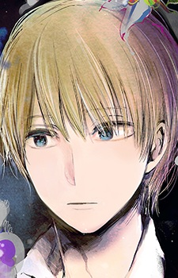
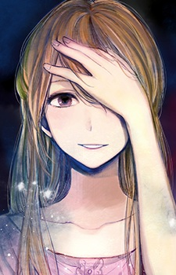
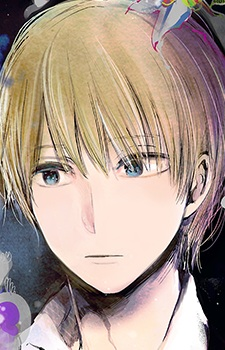
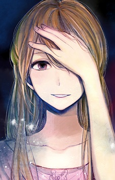
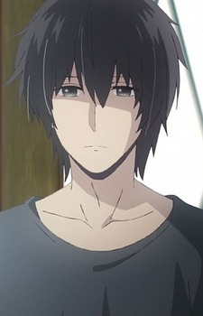
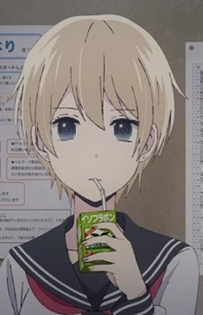
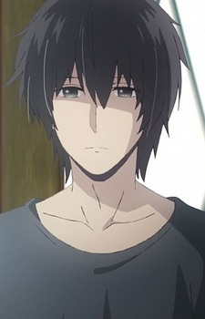
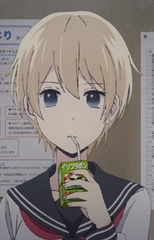

To the outside world, Hanabi Yasuraoka and Mugi Awaya are the perfect couple. But in reality, they just share the same secret pain: they are both in love with other people they cannot be with. Hanabi has loved her childhood friend and neighbor Narumi Kanai for as long as she can remember, so she is elated to discover that he is her new homeroom teacher. However, Narumi is soon noticed by the music teacher, Akane Minagawa, and a relationship begins to blossom between them, much to Hanabi's dismay. Mugi was tutored by Akane in middle school, and has been in love with her since then. Through a chance meeting in the hallway, he encounters Hanabi. As these two lonely souls spend more time together, they decide to use each other as a substitute for the one they truly love, sharing physical intimacy with one another in order to stave off their loneliness.

 



 


